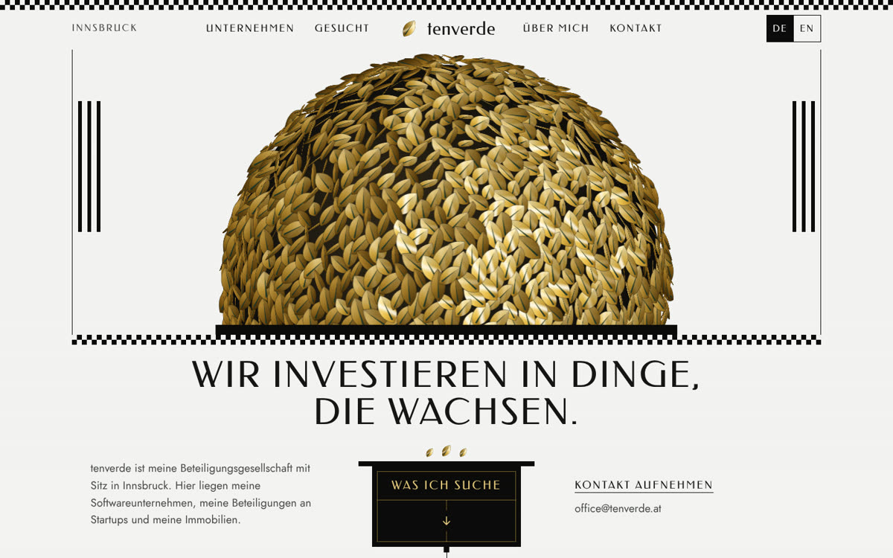
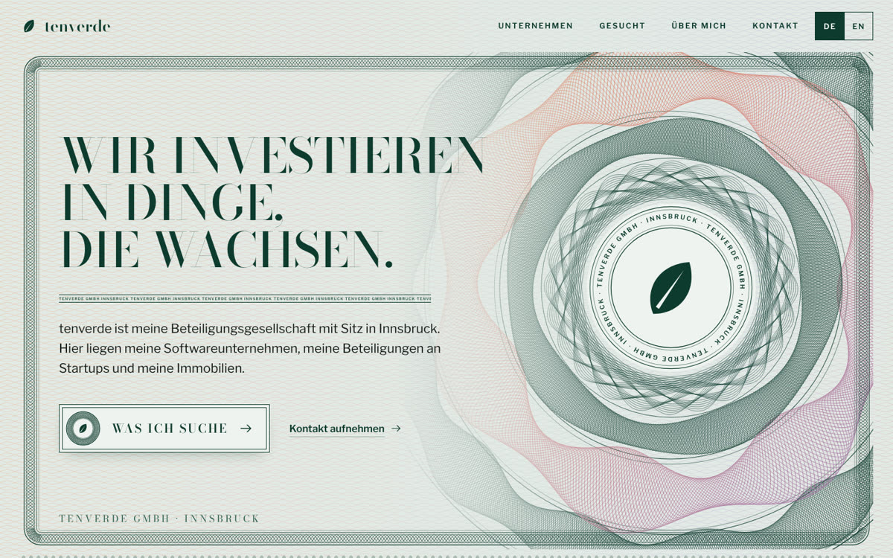
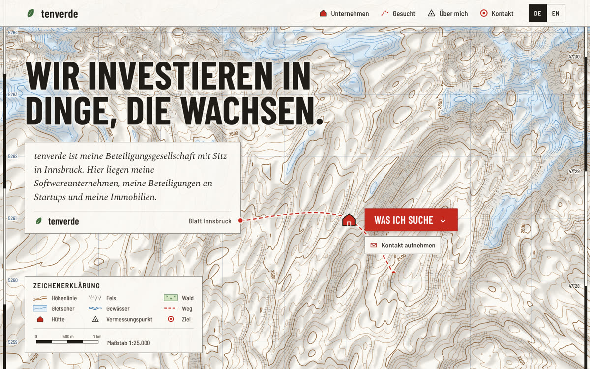
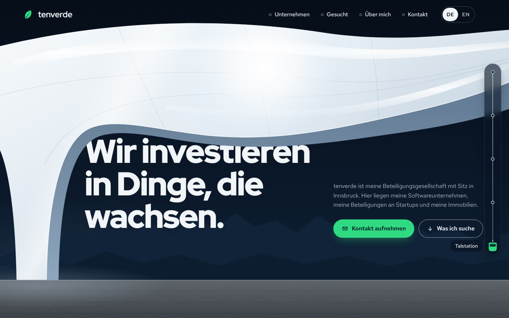
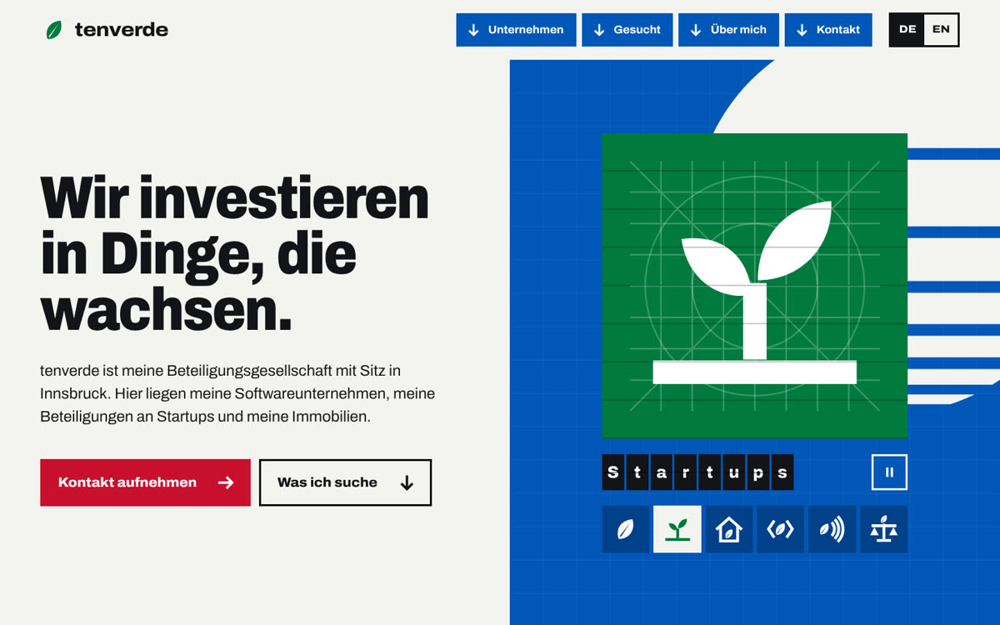
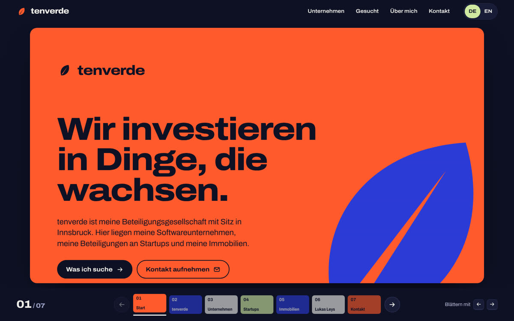
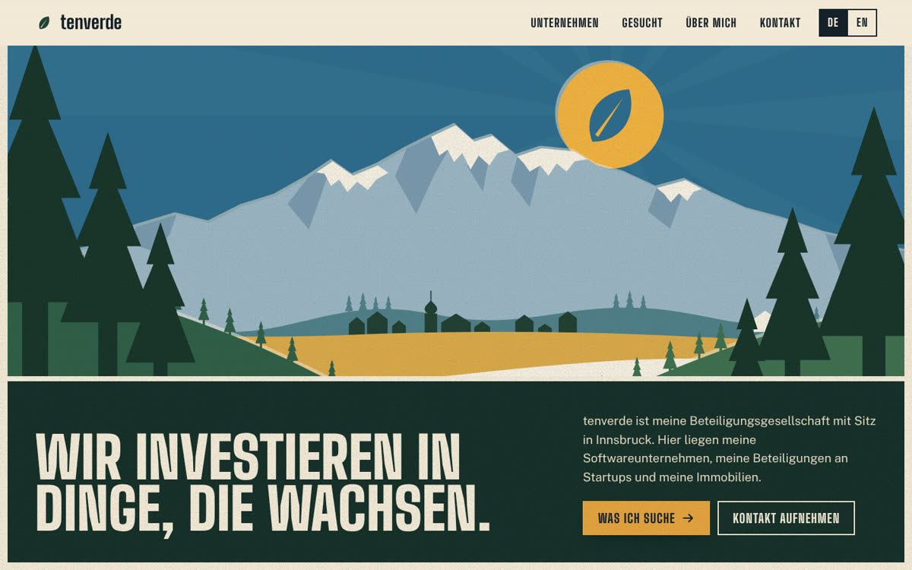
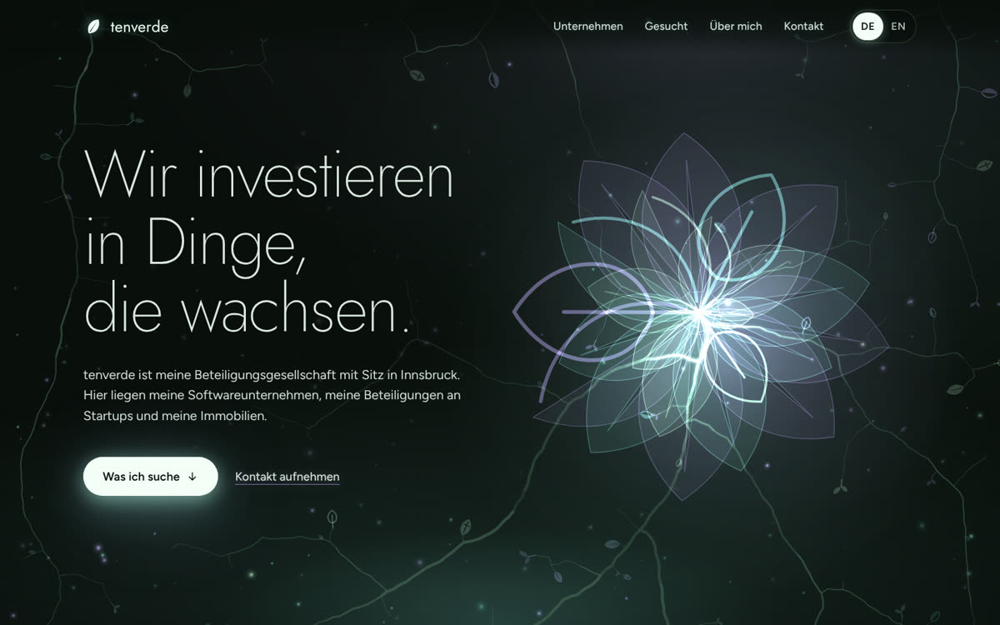
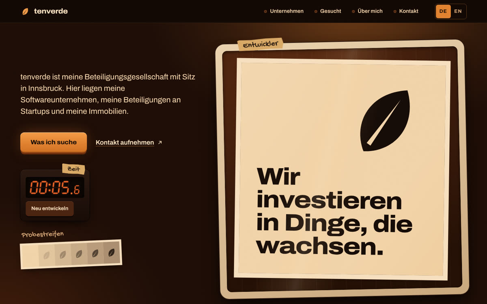
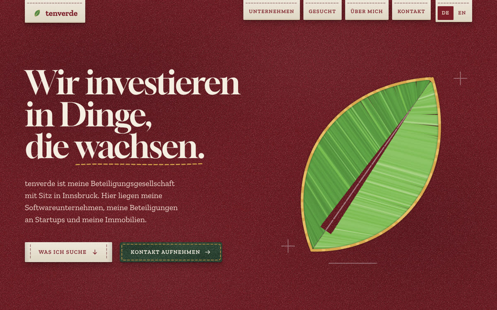

Jeder Entwurf ist eine vollständige, klickbare Seite mit allen Inhalten, Deutsch und Englisch umschaltbar. Die Bewegung und das Zusammenspiel mit der Maus sieht man erst auf der geöffneten Seite.

Die Wiener Secession als Haus der eigenen Firmen. Die Kuppel besteht aus rund 1.000 tenverde-Blättern, darunter Inschrift und Tür.
Bewegung: Die Blätter drehen sich zum Mauszeiger und fangen Licht, in Ruhe atmet die Kuppel.

Die Seite ist eine Urkunde der tenverde GmbH. Kupons für die vier Firmen, ein Zeichnungsschein als Kontakt, die Unterschrift von Lukas Leys.
Bewegung: Die Rosette wird live aus Kurven gezeichnet und verformt sich unter dem Mauszeiger.

Ein Blatt der Alpenvereinskarte von Norden nach Süden. Firmen sind Hütten, die Suchprofile Routenbeschreibungen, das Ziel liegt auf den Koordinaten von Innsbruck.
Bewegung: Die Höhenlinien zeichnen sich ein, eine Lupe zeigt Koordinaten, die rote Route wächst beim Scrollen mit.

Die Schalen der Hungerburgbahn. Die Seite fährt von der Talstation auf die Bergstation, jede Firma ist eine Station.
Bewegung: Ein Lichtreflex folgt dem Mauszeiger über die Schalen, rechts steigt die Kabine mit dem Scrollen.

Ein Erscheinungsbild im Geist der Spiele von Innsbruck 1976. Das Blatt wird zur Piktogrammfamilie, für jede Firma und jede Tätigkeit eines.
Bewegung: Die Piktogramme wechseln wie auf einer Fallblattanzeige, beim Überfahren klappt das der Firma um.

tenverde antwortet auf Pitch Decks mit einem eigenen Deck. Sieben Folien im Format 16:9, jede mit eigener Farbe.
Bewegung: Pfeiltasten und Folienleiste blättern, beim Scrollen öffnet sich jede Folie aus einem Rahmen.

Ein Tiroler Reiseplakat in vier flachen Druckfarben. Die Nordkette in Ebenen, darunter ein Imperativ in Blockschrift.
Bewegung: Die Ebenen verschieben sich mit Maus und Scrollen, die Farben wechseln je Abschnitt wie Jahreszeiten.

Ein Waldboden bei Nacht, auf dem Wachstum Licht ist. Wurzeln verbinden die Abschnitte, die Firmen sind vier Gewächse.
Bewegung: Wo der Mauszeiger hinkommt, wachen Wurzeln und Blätter auf. Beim Scrollen läuft ein Lichtimpuls die Wurzel entlang.

Entwicklung im wörtlichen Sinn. Die Firmen hängen als Abzüge an der Leine, dein Porträt wird später hier entwickelt.
Bewegung: Überschrift und Blatt entwickeln sich in der Schale, im Kontakt geht das Licht an.

Tiroler Lodenstoff auf Luxusniveau. Das Blatt ist aus fast 500 Fäden gestickt, die Firmen sind Aufnäher und Etiketten.
Bewegung: Die Stiche nähen sich beim Scrollen selbst, beim Überfahren zieht sich der Faden straff.